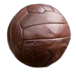

Apesar de ser figura única em campo, este atleta foi inserido no esporte em 1871, somente 23
anos após as primeiras uniformizações das regras do futebol que aconteceram em 1848, sendo,
portanto, o último a ser criado, inclusive, depois do árbitro de futebol.
Relembre os vencedores do prêmio de melhor goleiro do The Best:
2017: Gianluigi Buffon (Juventus/Itália)
2018: Thibaut Courtois (Chelsea/Bélgica)
2019: Alisson (Liverpool/Brasil)
2020: Manuel Neuer (Bayern de Munique/Alemanha)
2021: Édouard Mendy (Chelsea/Senegal)
2023: Emiliano Martínez (Aston Villa/Argentina)
Bola feita com bexiga de boi

A primeira bola de futebol foi feita de couro curtido (capotão), e a câmara de ar era uma bexiga
de boi. Em 1958, a bexiga deu lugar à câmara de ar de borracha, mas, em dias chuvosos, as bolas
encharcavam-se, chegando a pesar o dobro. Em 1994, as bolas começaram a ficar mais leves, graças
à presença de polímeros. O poliuretano foi usado como revestimento e, nas camadas internas,
empregou-se o poliestireno, enquanto as câmaras eram de látex.
Roubaram a taça!
"O troféu da Copa do Mundo foi usado em duas versões: a Taça Jules Rimet, de 1930 a 1970, que
levava o nome do primeiro presidente da Fifa, entidade que rege o futebol, e o Troféu da Copa do
Mundo, usado de 1974 até hoje.
Nas primeiras edições, a posse definitiva da taça ficaria com o país que conseguisse vencer três
edições do mundial, o que aconteceu com o Brasil após vencer em 1958, 1962 e 1970. Depois do
tricampeonato do Brasil, a Fifa elaborou a nova taça, dessa vez sem permitir a entrega
definitiva aos vencedores.
Em 1983, a Jules Rimet foi roubada no Brasil e, alguns dias depois, foi descoberto que ela havia
sido derretida. Em 2015, uma parte da taça foi encontrada nos porões da sede da Fifa, em
Zurique, na Suíça."
PONTUAÇÃO DOS CAMPEÕES DO CAMPEONATO BRASILEIRO DESDE 2012!